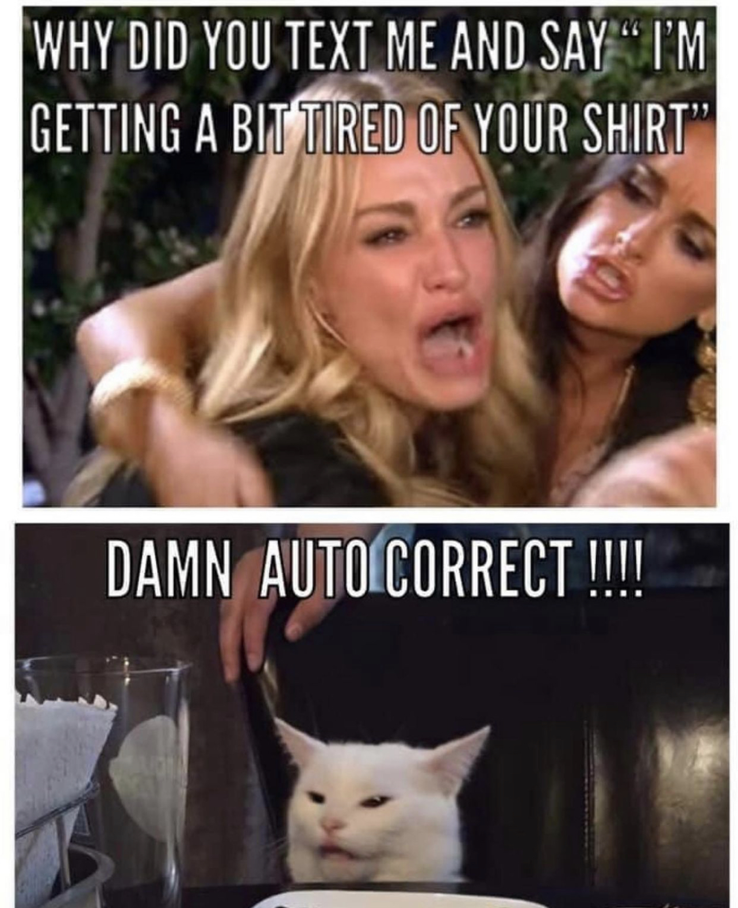
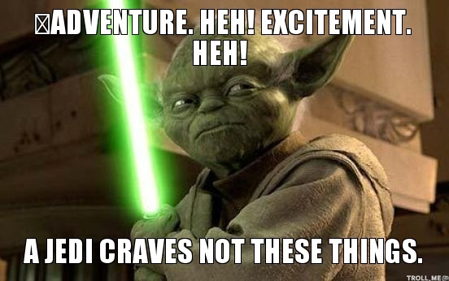

# On Grammaticality in Language and Memes ### LIGN 42 - Will Styler --- ### Linguists, my apologies - You've learned some of this before - Please help me guide the conversation, and tell us what you've learned --- ## Grammaticality Examples - A "This is perfectly fine" - E "This is not acceptable in any way" --- ### Example Group A - 1: "Will was surprised that people signed up for this class." - 2: "A loss meme, Priya was judged for posting." - 3: "Alonso liked all the pupusas he tried them" - 4: "Maria walk to a parks on Weekend." - 5: "Drake funny laughed meme Murray the at." - 6: "이것은 올바른 영어가 아닙니다" --- ### These show differences in **descriptive grammaticality** - They get progressively harder to understand - They are not 'wrong' so much as 'broken' - These don't follow rules that everybody follows --- ## Let's see some *descriptively* ungrammatical sentences --- ### Example Group B - 1: There looks to be a problem outside - 2: There sounds to be somebody in there - 3: There smells to be something rotten in there - 4: There feels to be something in the bag - 5: There tastes to be an issue with the cookies - 6: "Would you like fish and chips?" "Yes, I'll do those." --- ### These examples show *gradience* - Grammaticality isn't on or off, there can be levels --- ## Let's see hear some differently interesting sentences --- ### Example Group C - 1: "Me and my friend walked over to Geisel" - 2: "This class is a strange thing to start your linguistics education with." - 3: "Will loves to defiantly make students cringe when teaching." - 4: "Irregardless of what buttons were pressed; my oven would'nt turn on." - 5: "The cat's were sleeping on you're couch over their." - 6: "ur rly gon disliek dis last sntce if ur a eng prof!! 🤣" --- ### These show differences in **prescriptive grammaticality** - They're all quite understandable, but they break 'rules' - Spelling conventions - 'Never end a sentence with a preposition' - 'irregardless isn't a word' - These aren't rules which 'matter' for understanding as in group A - They're social rules --- ### Example Group D --- ### Imagine you're teaching a class - You've given a student a B+, and they decide to engage in some grade-grubbing - 😖 - You receive the following email... --- - 1: "Professor, would it maybe be possible for you to perhaps reconsider my grade on my final paper?" - 2: "Will, can you please change my grade on the final? It seems a bit lower than I deserved." - 3: "dude we both know my final grade was way low, could you change it?" - 4: "hey prof change mah final proj grade plz. shiz was wayyyyyy too low dawg." - 5: "pls pls pls change my final grade 🥺🥺🥺🥺🥺 fr im so so sad i got an a-" --- ### These are differences in **register** - There are some *prescriptive* spelling rules broken here, but all are again understandable - Some of these sentences are perfectly well formed in one context (e.g. a group chat) but 'unacceptable' in this one - These might be described as 'too informal' or 'inappropriate' for emailing a professor - The language is not seen as 'ill formed', just 'in the wrong situation' --- ## Let's see some informal register sentences --- ## Let's see some formal register sentences --- ### Discussion Questions - Which of these example groups were hard to understand? - Which of these example groups are your English teachers concerned with? - Which of these example groups show the influence of *social norms*? --- ### More Discussion Questions - What causes people to use *descriptively* ungrammatical language? - What causes people to use *prescriptively* ungrammatical language? - What causes people to change *register*? --- ## Descriptive Ungrammaticality applies to memes --- <img class="r-stretch" src="memes/ungrammatical/pokewrong.jpg"> ---  --- <img class="r-stretch" src="memes/ungrammatical/zoomclass.jpg"> --- ---  --- ### We'll explore descriptive grammaticality more soon! - So be on the lookout for ill-formed memes and new language! --- ### Do the other two concepts exist in memes? - That's our goal for the next activity! --- ## Important Terms --- **Grammaticality**: Speaker intuitions about whether a chunk of language is 'correct', 'well-formed', 'valid', or 'understandable' in their language --- **Prescriptively Ungrammatical**: A judgment that a chunk of language is 'wrong' or 'incorrect' on the basis of social, societal, contextual, or academic 'rules'. **Descriptively Ungrammatical**: A judgment that a chunk of language is 'wrong' or 'incorrect' because it's violating speakers' *actual* grammar, and is thus unclear, ill-formed, or difficult to understand --- **Register**: Different manners of speaking your language, which can be more or less appropriate in a given sociocultural context. This often corresponds with 'formality'